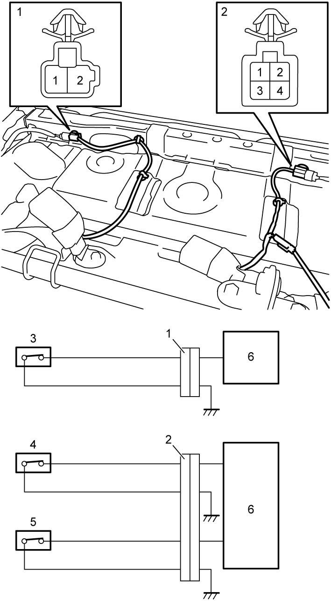
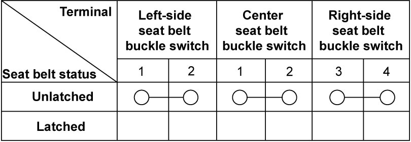

8A
| Seat Belt Buckle Inspection |
Belt Latch
Check that lock is released by pressing release button (3) when tongue plate (2) is latched to buckle (1).
NOTE:
Refer to Owner’s Manual for releasing left side connection of rear center seat belt.

 "Expand image")
Seat Belt Buckle Switch (If Equipped)
1)Remove rear seat cushion. 
2)Disconnect left-side seat belt buckle switch connector (1) and right-side and center seat belt buckle switch connector (2).
3)Check continuity between seat belt buckle switch connectors terminals “1” and “2” or “3” and “4”.


 "Expand image")
| 3. | Left-side seat belt buckle switch | 5. | Center seat belt buckle switch |
| 4. | Right-side seat belt buckle switch | 6. | BCM |
Seat belt buckle switch continuity

 "Expand image")